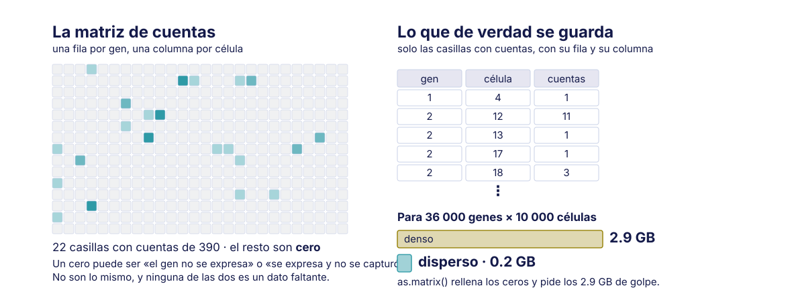
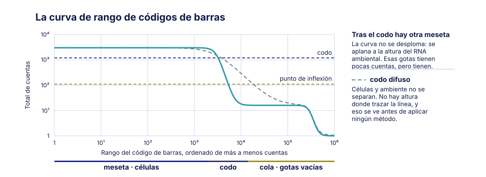
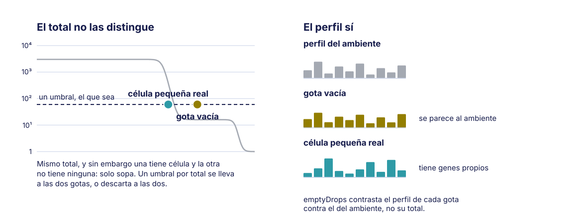
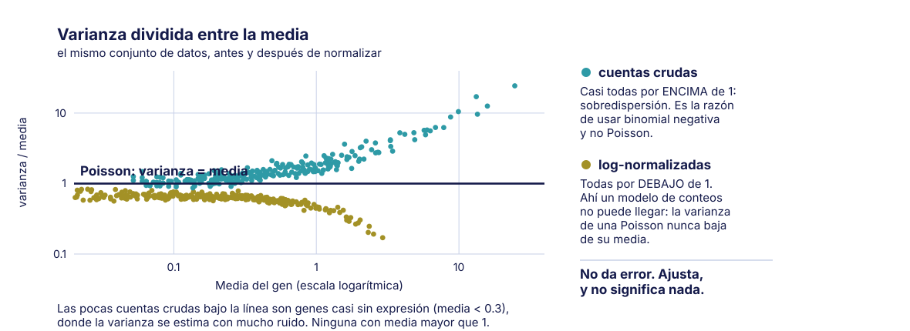

Sesión 04 · Jueves 27 de agosto de 2026
De matriz a objeto listo. Rutas de importación y estructuras de datos
Bioinformática y Estadística 3 · Licenciatura en Ciencias Genómicas
ENES Juriquilla, UNAM · Semestre 2027-1
Yalbi Itzel Balderas Martínez
Alfredo Morales Salazar
Laboratorio de Biología Computacional · INER

Antes de empezar
Objetivo de la sesión
Manipular con soltura el objeto de datos de célula única; reconocer las distintas rutas por las que pueden llegar datos de célula única y qué estructura produce cada una; y distinguir gotas vacias de gotas con célula mediante criterios estadísticos y no por un umbral arbitrario.
Cómo está armada
Sesión práctica (bloque continuo, día 2) de 120 minutos.
- 6 bloques de trabajo, con descansos entre ellos
- Se alterna explicación y trabajo propio
El caso que abre la sesión
Importante
Caso de aplicación: el colaborador que manda un .rds: la situación más común en la vida real de un laboratorio: llega un archivo .rds por correo, sin documentación, y hay que averiguar qué contiene. Puede venir filtrado, normalizado, con reducciones ya calculadas y con una versión de Seurat distinta a la instalada. El ejercicio consiste en interrogar al objeto antes de analizarlo: cuántas células tiene, si los valores son enteros o decimales, si existe una capa de cuentas crudas, y que versión lo generó. Es la habilidad que separa a quien puede colaborar de quien solo puede correr su propio guion.
Desarrollo
Llegó el trabajo del martes
Dentro de outs/ hay dos matrices:
| Qué contiene | |
|---|---|
raw_feature_bc_matrix |
todos los códigos de barras vistos |
filtered_feature_bc_matrix |
solo los que el programa llamó «célula» |
¿Cuál de las dos usarían?
Piénsenlo antes de responder. No hay una sola respuesta.
Depende de qué van a hacer después
| Si quieren… | Usen |
|---|---|
| Analizar tipos celulares directamente | filtered |
| Hacer su propio llamado de células | raw |
| Estimar RNA ambiental | raw |
| Reproducir lo que hizo el programa | filtered |
filteredya tiene aplicado un algoritmo que alguien más eligió- Las gotas vacías que ese algoritmo descartó son justo las que informan del ambiente
Advertencia
Tomar filtered y luego intentar control de calidad no falla con un error: simplemente no encuentra nada, porque ya se hizo.
Por qué la matriz es dispersa
La mayoría de las entradas son cero: una célula expresa una fracción de los genes anotados, y muchos transcritos no se capturan.
Cuenta en vivo, con números del propio conjunto de datos:
| Genes × células | 36 000 × 10 000 |
| Entradas | 360 millones |
| En denso, a 8 bytes | ~2.9 GB |
| No ceros (~5 %) | ~18 millones |
| En disperso | ~0.2 GB |
Advertencia
as.matrix() sobre una matriz dispersa es la forma más rápida de matar una sesión de R. No se convierte a denso «para ver mejor».
Así se ve, y así se guarda

Cuántos transcritos se capturan de verdad
| Fuente | Cifra | Qué mide |
|---|---|---|
| 10x Genomics, su propia documentación | 6.7–8.1 % (v1) · 14–15 % (v2) · 30–32 % (v3) | fracción de transcritos de mRNA capturados por célula, por química |
| Svensson et al. 2017 | 5–10 % para RNA endógeno (contra smFISH) · 0.5–1 % para los ERCC | eficiencia molecular medida contra un patrón |
Eficiencia molecular medida contra un patrón: Svensson et al. (2017)
- La química importa mucho: de v1 a v3 la captura se cuadruplica. Nosotros usamos v3, así que el número que aplica es ~30 %
- El 10 % que se cita de papers viejos es de químicas anteriores
Anatomía de SingleCellExperiment
| Ranura | Qué guarda | Orientación |
|---|---|---|
assays |
las matrices: counts, logcounts |
genes × células |
rowData |
metadatos de genes | una fila por gen |
colData |
metadatos de células: lote, donante, condición | una fila por célula |
reducedDims |
PCA, UMAP | células × dimensiones |
metadata |
lo que no cabe en lo anterior | libre |
- Todo viaja junto: filtrar células filtra
colDatay las columnas del assay - Por eso no se guardan los metadatos en un data.frame aparte
Los otros dos objetos
| SingleCellExperiment | Seurat | AnnData | |
|---|---|---|---|
| Lenguaje | R | R | Python |
| Cuentas | counts(sce) |
obj[["RNA"]]$counts |
adata.X o adata.raw |
| Metadatos de célula | colData |
obj@meta.data |
adata.obs |
| Metadatos de gen | rowData |
obj[["RNA"]]@meta.data |
adata.var |
| Reducciones | reducedDims |
obj@reductions |
adata.obsm |
| Orientación | genes × células | genes × células | células × genes |
La trampa de la orientación
AnnData está transpuesto respecto de los otros dos. Al convertir, las dimensiones se intercambian: si no se verifica, se analiza una matriz al revés.
Casi nunca se empieza desde los FASTQ
Se empieza desde lo que haya. Quien solo conoce una ruta se paraliza la primera vez que le llega otra.
| Origen | Qué llega | Objeto |
|---|---|---|
| FASTQ / Cell Ranger | carpeta outs/ |
SingleCellExperiment |
| Matriz MTX suelta | tres archivos | los tres |
| Objeto de práctica | .rds o descarga |
Seurat / SCE |
| GEO | lo que el autor subió | el que toque 🎲 |
| CZ CELLxGENE | .h5ad |
AnnData |
| Colaborador | .rds serializado |
Seurat |
Formato loom |
.loom |
SCE o AnnData, según el lector |
Cada ruta trae su trampa
- Cell Ranger — ¿
rawofiltered? Es la decisión con la que abrimos - GEO — puede traer cuentas por millón, transcritos por millón o algo ya normalizado, con la misma frecuencia que cuentas
- CELLxGENE — las cuentas suelen estar en
raw, no enX - Colaborador — puede venir filtrado, normalizado y de otra versión de Seurat
Regla general
Si hay decimales, no son cuentas crudas. Ninguna de estas rutas avisa con un mensaje de error.
Unir muestras de GEO
Un detalle que rompe análisis en silencio:
- La lista de códigos de barras de 10x es fija y conocida de antemano: toda corrida reparte sus células entre las mismas secuencias
- Por eso
AAACCCAAGCGTAAGA-1existe en todas las muestras. Y el-1no dice de cuál es: numera el pocillo dentro de esa corrida - Al unir sin prefijar, dos células distintas comparten nombre y colisionan
- No hay error: hay menos células de las que debería y nadie lo nota
El prefijo, antes y después
¿Cuándo se une?
Cuando un estudio trae varias muestras y quieres un solo objeto para compararlas: cada una se importa por separado y luego se combinan.
cbind() en SCE · merge() en Seurat · ad.concat() en Python
El prefijo se pone antes de esa línea. Siempre. Después ya colisionaron.
Les toca el 1 de septiembre, al juntar los dos lotes
A cada equipo, un origen distinto
| Equipo | Le toca |
|---|---|
| A | salida de Cell Ranger |
| B | una serie de GEO |
| C | un .h5ad de CELLxGENE |
| D | un .rds de un colaborador, sin documentación |
Advertencia
Interrogar el objeto antes de tocarlo. No se normaliza, no se filtra, no se grafica hasta responder las cuatro preguntas.
Las cuatro preguntas obligatorias
- ¿Son cuentas crudas? — ¿enteros o decimales? ¿hay una capa con las crudas?
- ¿Están ya filtradas? — ¿cuántas células? ¿alguien ya llamó células?
- ¿Dónde están los metadatos de lote? — donante, corrida, condición
- ¿Qué anotación se usó? — símbolos o identificadores, y de qué versión
Importante
Estas cuatro vuelven el 3 de septiembre, sobre los datos de su proyecto. Conviene dejarlas aprendidas hoy.
Se responden en el formulario
Las respuestas de los cuatro equipos quedan lado a lado al volver a la sala principal.
- Lo interesante no es cada respuesta: es cuántas veces la respuesta es «no se sabe»
- Un objeto que no puede contestar estas cuatro preguntas no está listo para analizarse
¿Cuáles de esos códigos de barras son células?
Una corrida de 10x ve cientos de miles de códigos de barras. Células hay unos pocos miles. El resto son gotas vacías: no están limpias, contienen RNA ambiental del medio.
Importante
Esta es la pregunta que quedó abierta el martes, cuando las cuatro matrices no tenían las mismas dimensiones.
Por qué hay tantos, y tan pocas células
- Las células se cargan diluidas a propósito: es lo que evita que dos caigan en la misma gota. El precio es que a la mayoría no le toca ninguna
- Una gota sin célula no está vacía de RNA: la sopa del medio entra en todas, así que produce cuentas de verdad —unas decenas
- Y la matriz cruda trae una columna por código de la lista, no por célula
La aritmética del cargado y las referencias, en el capítulo del manual
La curva de rango de códigos de barras
Se ordenan todos los códigos por su total de cuentas, de mayor a menor, y se grafica en escala logarítmica.

Dos formas de trazar la línea
| Umbral fijo | emptyDrops |
|
|---|---|---|
| Criterio | un número de cuentas | prueba estadística contra el perfil ambiental |
| Qué usa | solo el total | el perfil de expresión completo |
| Células pequeñas | las pierde | las conserva si su perfil difiere del ambiente |
| Resultado | reproducible pero arbitrario | depende de una FDR que se declara |
Prueba estadística contra el perfil ambiental: Lun et al. (2019)
Por qué el total no alcanza

Por qué importaba elegir entre raw y filtered
Advertencia
emptyDrops necesita las gotas vacías para estimar el perfil ambiental. Con la matriz filtered ya no están: el método se queda sin su grupo de comparación.
- Por eso la pregunta con la que abrimos no era retórica: decidía si este paso se podía hacer siquiera
Se guarda la figura de la curva de rango. Reaparece si se cubre RNA ambiental.
Y si sobra tiempo: RNA ambiental
Las gotas vacías que se acaban de descartar no están vacías: contienen RNA libre del medio. Ese mismo RNA está también dentro de las gotas con célula.
- Es el único paso de calidad que no deja pasar ruido, sino que genera señal falsa
- Un marcador puede aparecer en un tipo celular que no lo expresa
SoupXen modo manual estima la contaminación sin necesitar agrupamiento
Estimación de RNA ambiental: Young & Behjati (2020)
Nota
Se le dan genes que no deberían expresarse en la mayoría de las células —hemoglobina fuera de eritrocitos, inmunoglobulina fuera de linfocitos B— y de ahí sale la fracción. La biología la pone quien analiza, no el programa.
Un último archivo que interrogar
CZ CELLxGENE Discover es el repositorio público de la Chan Zuckerberg Initiative. Reúne conjuntos de célula única ya publicados y los re-anota con un esquema común —tipo celular, tejido, enfermedad y ensayo con términos de ontología—, para que se puedan comparar entre estudios.
Esa estandarización es también la razón de lo que viene: lo que se publica ahí suele estar ya normalizado.
¿Son cuentas crudas?
Voten en la encuesta antes de que se discuta.
Casi siempre, no
X trae valores normalizados y transformados. Las cuentas están en raw.
El dtype no delata nada
- Las dos dicen
float32. Lo que delata no es el tipo, son los valores - No hay ningún mensaje de error que lo advierta
Por qué esto arruina un análisis entero
- Los métodos de célula única suponen conteos: modelos de Poisson, binomial negativa
- Con valores ya transformados, el supuesto se rompe en silencio
- El análisis corre, produce figuras, y todo lo estadístico es inválido
Importante
No falla ruidosamente. Falla produciendo resultados que parecen bien.
Y así se ve la rotura

Por qué eso es imposible
- Para una Poisson, varianza y media son el mismo número: el índice vale exactamente 1. Es su piso
- Las cuentas crudas caen arriba. A eso se le llama sobredispersión, y es la razón de usar binomial negativa
- Las transformadas caen abajo, entre 0.17 y 0.47. Ahí ningún modelo de conteos puede llegar
Advertencia
El modelo ve una varianza menor que su propio mínimo. No protesta: ajusta.
Errores comunes
Usar la matriz filtered cuando se quería hacer control de calidad
| Cómo se detecta | El control de calidad no encuentra nada porque ya se hizo; las gotas vacias no están |
| Cómo se resuelve | Para emptyDrops o para estimar RNA ambiental se necesita la matriz raw. La carpeta filtered ya tiene aplicado un algoritmo de llamado de células. |
Tomar adata.X de CELLxGENE como cuentas crudas
| Cómo se detecta | Valores decimales tratados como conteos; toda la estadística posterior es inválida |
| Cómo se resuelve | En CELLxGENE las cuentas crudas suelen estar en raw o en una capa. Regla general: si hay decimales, no son cuentas crudas. |
Suponer que una matriz de GEO son cuentas
| Cómo se detecta | Igual que el anterior, pero más frecuente todavía |
| Cómo se resuelve | Revisar siempre. Los autores suben cuentas por millón (CPM), transcritos por millón (TPM) o valores normalizados con la misma frecuencia con que suben cuentas. |
Unir muestras de GEO sin prefijar el nombre de la muestra
| Cómo se detecta | Códigos de barras repetidos que colisionan; células que se fusionan silenciosamente |
| Cómo se resuelve | Prefijar el identificador de muestra a cada código de barras antes de unir. |
Convertir entre objetos sin verificar
| Cómo se detecta | Se pierden metadatos, reducciones o capas sin ningún aviso |
| Cómo se resuelve | Después de cada conversión verificar tres cosas: dimensiones, suma total de cuentas, y que los metadatos de lote sobrevivieron. |
Abrir un objeto Seurat v4 con Seurat v5 sin actualizarlo
| Cómo se detecta | Errores incomprensibles o, peor, comportamiento silenciosamente distinto |
| Cómo se resuelve | UpdateSeuratObject() y después revisar que las capas quedaron donde deben. |
Y no es solo Seurat
Un archivo serializado no guarda solo datos: guarda la estructura que su paquete usaba al crearlo. Si esa estructura cambió, hay que traducirla.
- Seurat v4 → v5: el ensayo pasó a capas.
UpdateSeuratObject()traduce - Bioconductor: cada release va atado a una versión de R. Mezclar dos rompe dependencias sin mensaje claro
- AnnData: el
.h5adlleva su versión de esquema por dentro
Dónde se averigua qué cambió
El NEWS.md del repositorio en GitHub lo dice antes que cualquier viñeta. Y si el error persiste, se pega el mensaje literal en los issues del proyecto: si es de versión, casi siempre hay uno abierto con la respuesta.
Cierre
Qué mensaje se llevan a casa
- El objeto guarda matriz y metadatos juntos: por eso filtrar no los desalinea
- Cada ruta de importación trae su trampa, y ninguna avisa
- Las cuatro preguntas se le hacen a cualquier objeto, antes de tocarlo
- Qué es una célula es una decisión estadística, no un umbral
- Se pide
rawcuando uno va a llamar células o a medir el ambiente:filteredya trae esa decisión tomada por alguien más
El martes 1: control de calidad
- Ya hay un objeto con células de verdad. Ahora: ¿cuáles de esas células sirven?
- Métricas por célula, y por qué un umbral fijo tampoco funciona aquí
- Dobletes: dos células en una gota
- Y la idea que atraviesa la sesión: la calidad se decide en el laboratorio
Importante
Guarden la figura de la curva de rango y el objeto con las células llamadas. Es el punto de partida del martes.
Para leer
Referencias completas
Análisis de single-cell RNA-seq · Bioinformática y Estadística 3 · LCG, ENES Juriquilla UNAM · 2027-1